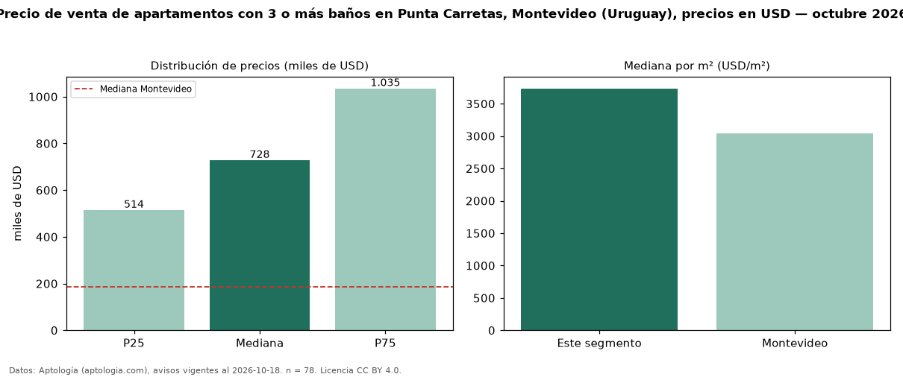

Precio de venta de apartamentos con 3 o más baños en Punta Carretas, Montevideo (Uruguay), precios en USD — octubre 2026
Con 78 avisos vigentes, el precio mediano de apartamentos con 3 o más baños en venta en Punta Carretas, Montevideo (Uruguay) es USD 727.810. Frente a la mediana de todos los apartamentos en venta de Punta Carretas (USD 299.000, n = 294), queda 143 % por encima; este segmento reúne el 27 % de esos avisos. Por metro cuadrado, la mediana es USD 3.735/m² (n = 76), 3 % por debajo del conjunto de referencia (USD 3.868/m²). El área mediana anunciada es 195 m². El segmento con más oferta es el de 3 o más habitaciones (74 avisos, mediana USD 750.000). La mitad central de los avisos va de USD 514.192 a USD 1,03 millones (razón 2,0), una dispersión alta. La mediana de todos los apartamentos en venta de Montevideo es USD 185.000 (+293 % de diferencia). Datos: Aptología (aptologia.com), CC BY 4.0 — https://www.aptologia.com/uy/venta/montevideo/punta-carretas. Archivos: PDF, CSV con las cifras y gráfica PNG.

| Avisos únicos | 78 |
|---|---|
| Percentil 25 | COP 514.192 |
| Mediana | COP 727.810 |
| Percentil 75 | COP 1.035.000 |
| Mediana por m² | COP 3.734 |
Fuente: avisos vigentes de portales inmobiliarios recopilados por Aptología, deduplicados (mínimo 30 avisos únicos por celda). Precios pedidos, no cerrados. Fecha: 2026-10-18.